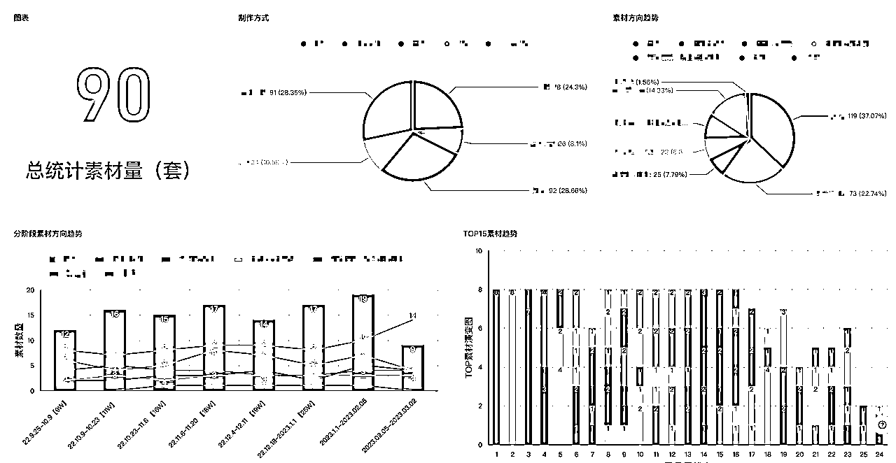
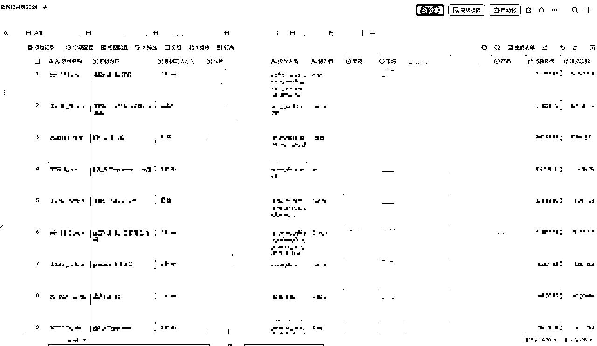
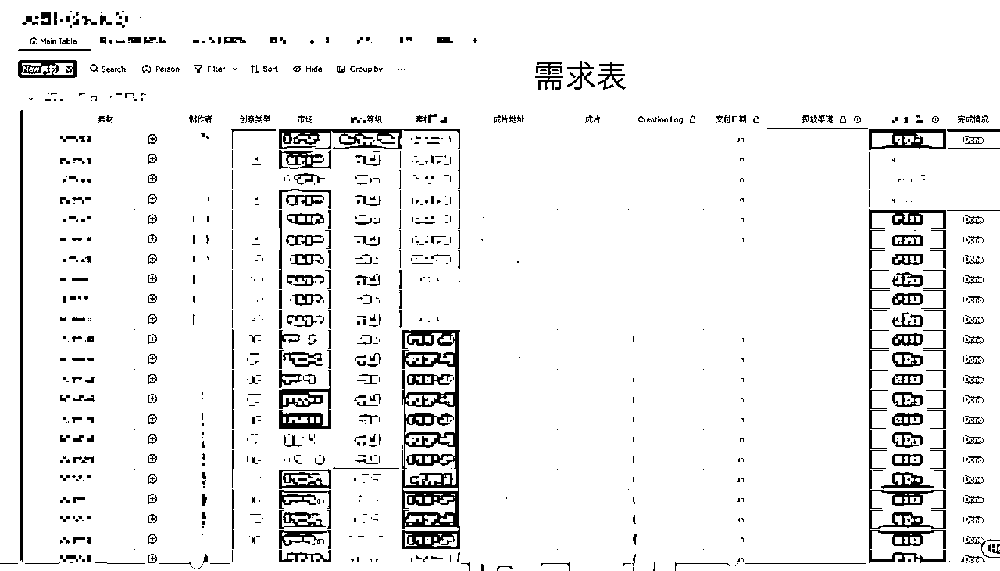
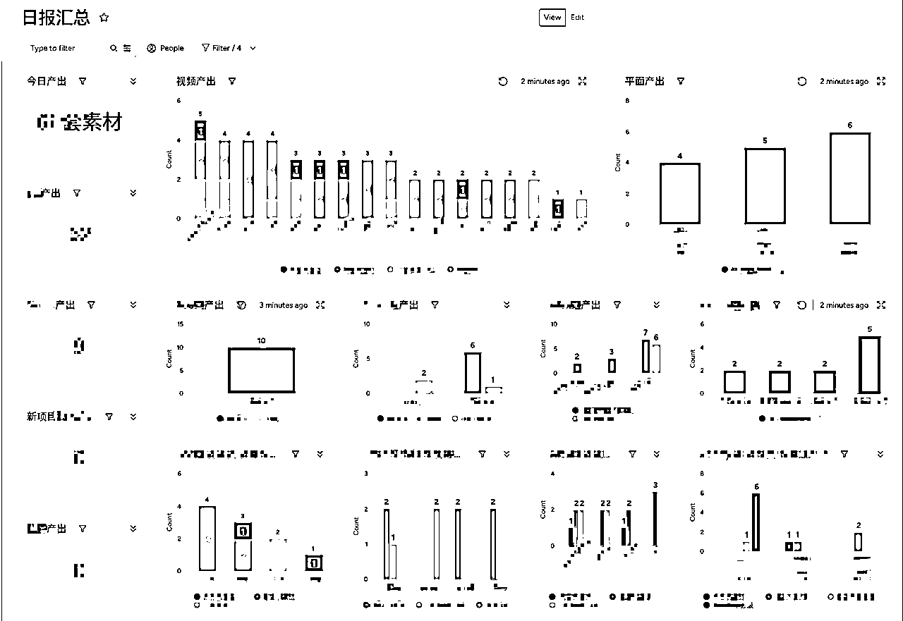
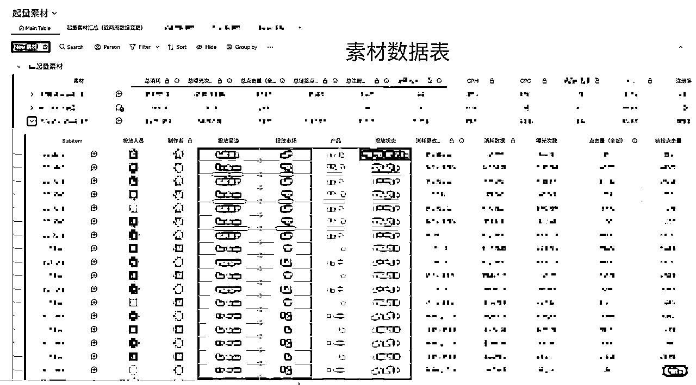
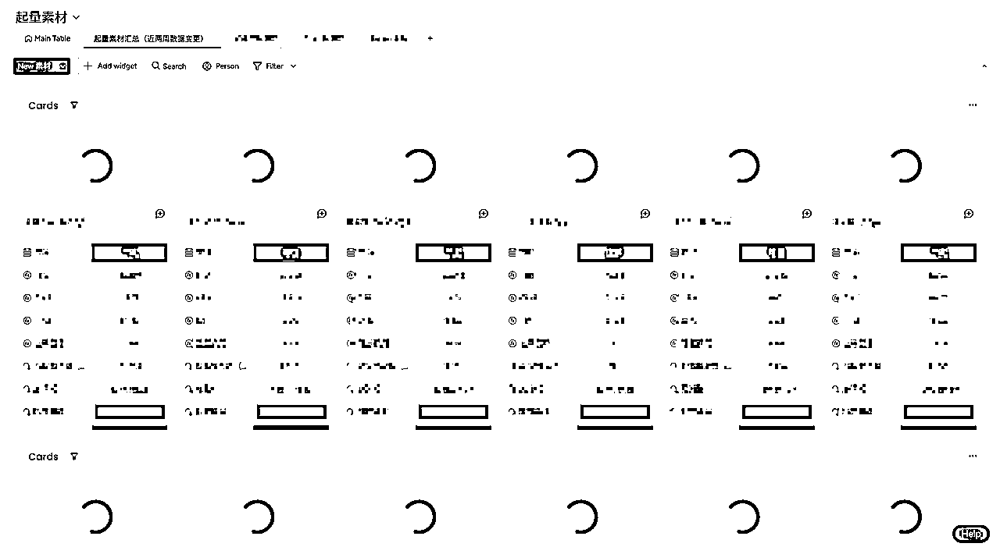
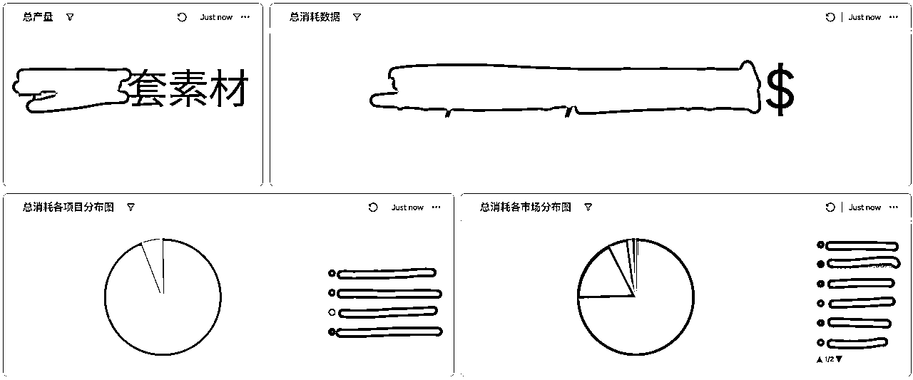
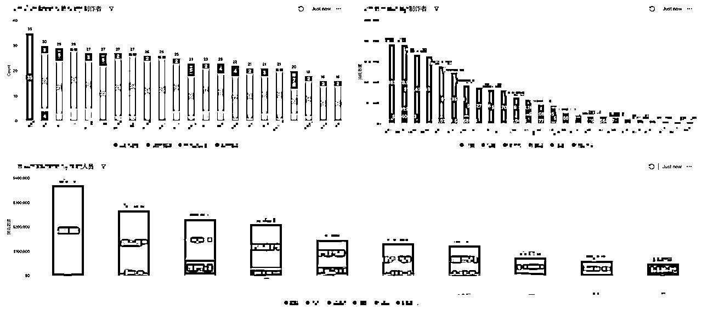
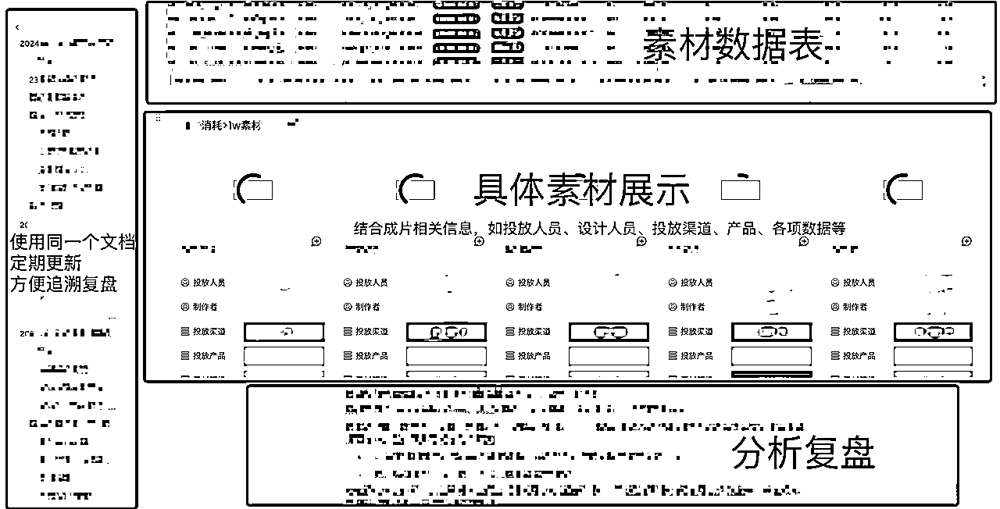

来源：https://yku6yoje2z.feishu.cn/docx/VGEgdPo31o4wCPxlGiCcRmcGnkd
计算机专业转行的海外游戏广告创意设计，19年开始做游戏出海买量，目前在带团队中，近5年团队花出去的广告费有几个小目标
生财新人，看到亦仁大大发的龙珠悬赏帖子，以研究项目为前提进行工具的介绍和在工作中的应用，非常感兴趣，首先生财里面游戏相关的专业信息还比较少，而我日常工作的一部分就是借用各种工具达到团队目标，提高自己和团队的工作效率，所以正好借着这次机会做一次梳理，以工作流的形式，把各个环节常用的工具/网站贴出来，供大家参考，希望能帮助更多的生财圈友，同时也为生财添砖加瓦
大公司有更成熟的工具中台，而针对于个人，生财有非常多的六边形战士，大家有更多小而美的工具方法跑通SOP，因此本文提到的工作流以及对应的工具，可能对于一些中小企业主更有参考价值和意义，提高在团队工作中，个人和集体的协同效率，也能帮助一些感兴趣的小伙伴更了解我们这一行
先放上工作流和思维导图，方便大家查找关键信息，以及理解下文提到的工具如何搭配使用
因内容较多，外部思维导图工具生成的图片过大，放在文档会比较影响观看体验，同时图片无法跳转链接🔗
因此用的飞书自带的思维导图工具，可能不够美观，胜在足够清晰方便
首先，做海外市场，先要会一点🪄魔法，这里指的网络问题， 有的公司会解决，也有的需要靠第三方软件，市面上这种软件非常多，这里基于安全考虑就不展开了，大家可以自行查找
各类排行榜分析工具其实很多，以下是我比较常用的两个工具，也是行业内认可度比较高的两个工具，这两个工具使用场景不同，需要搭配使用
PS：这两个都是基础功能免费，高级功能付费
| 平台名称 | 链接 | 使用场景 | 优点 | 缺点 |
|---|---|---|---|---|
| Sensor Tower | https://sensortower.com/ | 比较权威的第三方数据平台，数据置信度较高（但也有误差，需要自行辨别） | 可以拉取产品的一些关键信息 | 广告素材相关数据比较少，需借助其他的工具 |
| Data.ai | https://www.data.ai/ | 适合做榜单分析，以及单个竞品的分析调研 | 榜单数据情况比较直观，可以按照行业、市场、设备等多种维度查看 | 产品相关数据没有Sensor Tower准确 |
做买量素材的都知道一个道理，创意为王，好的创意离不开大量的输入，包括竞品素材、市场热点素材、对标市场本地化素材等等
国内厂商主要有广大大、有米云、Adx，海外也有很多类似的平台，这里放上我日常工作中使用频率较高的一些工具，这些平台功能差异不会太大，因为每一个都需付费使用，价格不低，所以大家可以试用后选择一个就好（当然不差钱的可以都买了）
这些都属于第三方平台，平台数据跟实际投放数据存在差异，使用过程中需要自行甄别或者验证
| 平台名称 | 链接 | 优点 | 缺点 | 适合场景 |
|---|---|---|---|---|
| 广大大SocialPeta | https://www.guangdada.net/user/login | 国内最早的做广告营销平台，功能和算法比较成熟 | 稍贵，一个账号只能2个设备或者环境使用 | 适合分析特定产品的素材推广策略，可以系统性的分析竞品在不同推广阶段使用的素材，对素材推广策略的制定比较有帮助 |
| App Growing | https://appgrowing.net/ | 不绑定设备，但是有同时使用人数限制 | 新起之秀，较早的产品没有数据记录 | 不考虑数据的置信度，在找创意灵感上会比较有优势，例如近期市场上的爆量素材或者素材趋势 |
| Adheart | https://adheart.me/en/login | 一个账号，基本无设备限制 | 使用上没有上面两个平台功能强大 | 最大的优点就是无设备限制，适合团队体量大，上面两个设备不够用的时候，补充使用 |
除了通过第三方平台抓取竞品素材以外，还需要多刷刷投放渠道的广告，这些广告的即时性会更强，而且多刷刷可以加强自己的网感，可以多关注广告下面的互动信息，例如评论信息里面可以挖掘很多的素材爆点
以下工具排名不分先后，日常工作中都会用到
| 工具链接 | 优点 | 缺点 | ||
|---|---|---|---|---|
| Meta系 | FB广告资源库 | https://www.facebook.com/ads/library/?active_status=all&ad_type=all&country=TW | 免费 | 数据不是太全 |
| FB视频下载 | https://fdownloader.net/zh-cn#google_vignette | 免费 | 广告多 | |
| Ins视频下载 | https://fastdl.app/en | 免费 | 易挂，且有的网站会有下载限制，所以多储备几个换着用 | |
| 谷歌系 | YTB热门视频 | https://cn.noxinfluencer.com/youtube-video-rank/top-us-all-video-day | ||
| YTB视频下载 | https://youtube.iiilab.com/ | 免费 | 广告少的网站会把高清版的音视频文件分开，比较麻烦 | |
| 字节系 | 抖音/TikTok 视频去水印下载 | 常用： https://dlpanda.com/zh-CN | 免费 | 易挂，所以多储备几个换着用 |
| 抖音视频展示工具 | https://ads.tiktok.com/toolbox/preview/#/ | 发布广告前可以检查画面重点信息是否被遮挡 | ||
| TikTok热门趋势工具 | TT创意中心： https://ads.tiktok.com/business/creativecenter/inspiration/popular/music/pc/zh | 免费，在没有其他专业工具的情况下，找热点的时候可以参考 | 缺乏数据支撑，实际使用频率不高 | |
| 其他平台 | 快手视频下载 | https://www.tiantianjiexi.com/network/post.html | ||
| Kwai创意平台 | https://creative.kwai.com/portal#/home | |||
| Twitch视频下载 | https://clipr.xyz/ | |||
| Twitter视频下载 | https://x2twitter.com/zh-cn | |||
| 通用视频下载器 | Downie 4 | https://www.downie.cn/ | 支持youtube、instagram、头条、bilibili、新片场等多达千余网站 | 软件需付费（不过有破解版的） |
| 4K Video Downloader+ | https://4k-video-downloader.en.download.it/ | 支持大部分平台 | 不激活状态每天可下载10个 |
因工具较多，且需要搭配使用，因此仅列出每个工具的特点，按照使用优先级排序推荐
以下基本都是免费的，基本够用，付费的国内常用的如包图网、千库、千图等，不做重点介绍
🖼图片类：
🎞视频类：
软件/插件/脚本/模板相关：
好用软件：
https://www.bandicam.cn/
唧唧 - jijidown - 电脑客户端
https://maruko.appinn.me/
https://everything.en.softonic.com/
Cutterman - 为设计更专注
字体：
音频：
配音：
下面提到的两个工具都可以收集整理设计常用的图片、视频、音频、字体等各种文件的设计素材，可以极大地提高工作效率，具体的使用范围可以看官网教程，这里重点列出两个之间的差异
| 平台名称 | 链接 | 优点 | 缺点 | 适合场景 |
|---|---|---|---|---|
| Eagle | https://eagle.cool/ | 老牌的素材管理工具，功能比较成熟，可以采集、管理、检索等 | 付费，有设备限制 | 团队协作 |
| Billfish | https://www.billfish.cn/ | 免费 | 新起之秀，功能还在完善中，所以有时候会有些不兼容或者bug的情况 | 个人使用，或者轻度使用已经足够了 |
因需求管理和数据管理是形成工作流闭环的重要的两环，因此所用的工具最好是同一个平台，这里放在一起介绍，会展示如何连接使用
数据的重要性：
很多人都说买量是个玄学，其实做了这么久，分析了这么多广告之后，我们发现爆款是有规律的，很多爆款素材可以重复迭代，只要掌握了底层逻辑，玩法/市场/产品/平台 可以多重复用，素材复用性可以非常的高，并且数据量越大，结论置信度越高，结论的可复用效益就会最大化
常见痛难点：
推荐的工具搭配方法：
目前我们采取的是公司开发部分工具处理数据，方便各平台投放数据的录入以及存放（如果没条件的可以采用人肉录入的方法），结合可视化的工具对数据进行处理分析（例如飞书文档/Monday等），团队成员日常工作中能及时复盘回顾，大概需要3个文档形成闭环
| 工具名称 | 优点 | 缺点 | 适合场景 |
|---|---|---|---|
| 公司搭建工具中台 | 数据安全性有保障，可以做数据隔离 | 平台的搭建/维护/更新都会比较麻烦，需要定期发现问题不断完善，且一般承接需求的都是研发/技术人员，沟通成本会比较大 | 公司自行搭建，需要耗费人力资源，有条件的可以选此方案 |
| XMP | 专业的软件，跟大部分的广告后台接口打通，可以管理广告素材和投放广告计划等 | 必须使用XMP投放广告，要不然没有数据或者数据不准 | 付费，第三方平台，类似国内的巨量，感兴趣的可以看下官方介绍文档；集成式软件，适合不想花更多精力处理数据的 |
| 协同软件 | 可视化效果非常好，数据可视化展示很直观，对于复盘帮助很大 | 付费，如果超过基础服务，需加钱升级 | 目前我们使用的就是这种，前期搭建各种SOP、表格文档、规范可能会比较繁琐，但是如果工作流搭建好了，后期会非常丝滑，尤其是时间的积累下，不论是对业务还是效率都非常有帮助 |
| 谷歌文档 | 免费 | 文档功能较为单一，插入图片/视频文件非常麻烦 | 可能最大的优点就是免费，适合对文本或者数据收集处理，适合起步初期过渡使用，如果体量大的设计团队最好还是使用上面的付费软件 |
| Notion | 免费 | 插入单个视频有限制，最大5M，就因为这个限制放弃了，所以没有深度使用 | 免费，适合对文本或者数据收集处理，不适合图文视频类 |
下面放一些实际应用的案例截图，项目/数据信息已打码，大家了解工具用途就行
飞书和Monday都挺好用的，各有优缺点，个人使用推荐飞书，毕竟国内软件协同性更好，企业的话根据自己情况选择（因有些企业对办公软件有要求）
以下是飞书多维表格演示（Monday同理），这是取自一个竞品素材分析文档和数据表截图


以下是Monday 演示，这些功能飞书多维表格也可以实现
1、需求表：可以跟进设计人员的需求完成情况，项目进展、日报产出等信息


2、素材数据表：由投放优化师同学完成信息录入，通过需求名称与上面的需求表进行连接，完成后可以按照各种维度进行素材的分析


通过连接需求表以及素材数据表，可以阶段性的统计项目数据、设计师产量、优化师和设计师对应的数据等指标，同时此表还可以作为考核管理的依据


3、复盘文档：可以添加多种形式的文件，例如Monday可以引用谷歌表格链接、Monday的需求表等信息（飞书同理），非常直观，且保持同一个文档定期更新，便于追溯复盘
